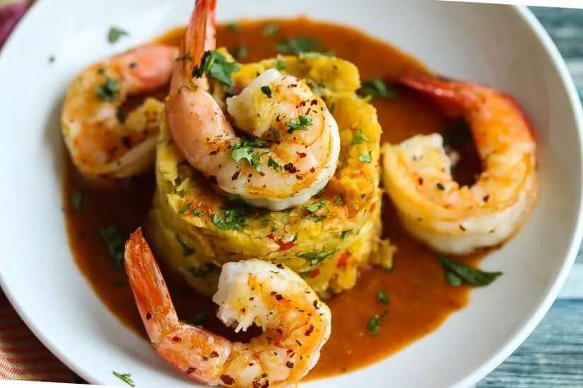

By Jose Plaud
Mofongo is a Puerto Rican staple dish. Relatively easy to make yet big on FLAVOR! In a nutshell, you’re just lightly pan-frying plantains and mashing them with a few simple ingredients.
It’s their mashed potatoes but with much more flair! It’s made with green plantains (savory bananas), mashed garlic and crunchy chicharron (fried pork rinds). It’s rooted in the West African dish fufu where yams or plantains are boiled and pounded into a doughlike consistency then rolled into balls and eaten.
It has a consistency that is neither too soft or too hard sitting somewhere in between mashed potatoes and chunky potato salad. Once mashed the plantains are molded into the shape of a bowl or ramekin and then stuffed with garlic and bacon in its simplest form.
Fresh herbs, onions, etc. may appear in different regional or familial versions. In this form mashed plantains are typically a side, but when stuffed or topped with braised meats or seafood it becomes mofongo relleno, a main entree.
In my version, I create a mofongo relleno de camarones which is Mofongo topped with shrimp and roasted red pepper sauce.
Cut the ends of the plantains, peel them and cut into 1-inch thick pieces and let them soak in salted water for 15 minutes. Drain the plantains and dry them very well.
Cook in hot oil about 3-4 minutes on each side, or until the discs have turned a darker golden color but have not yet browned (do not let them brown!).You should be able to easily pierce them with a fork when they are ready. NOTE: Make sure there is sufficient fat in the pan, add additional if the plantains soak up too much.
Add bacon to frying pan and cook 5 minutes then add the onions and peppers, stirring occasionally. Cook until bacon is crisp and onion is soft and caramelized a bit.
Using a mortar & pestle of large bowl + potato masher - mash plantains then add minced garlic, spices, and cilantro. Next add in the bacon, onions, peppers, and pan grease. Knead until well mixed but not overmixed.
Spray inside of a small bowl or ramekin with cooking spray or grease with oil. Pack a portion of the plantain dough into the bowl to shape it, then invert the bowl to slide the mofongo out onto a plate. Press the top of the mofongo with your thumb to create a small crevasse.
Heat a large skillet over medium-high heat. Add olive oil then fry the shrimp 2 minutes per side
Place the shrimp around and on top of the mofongo.
